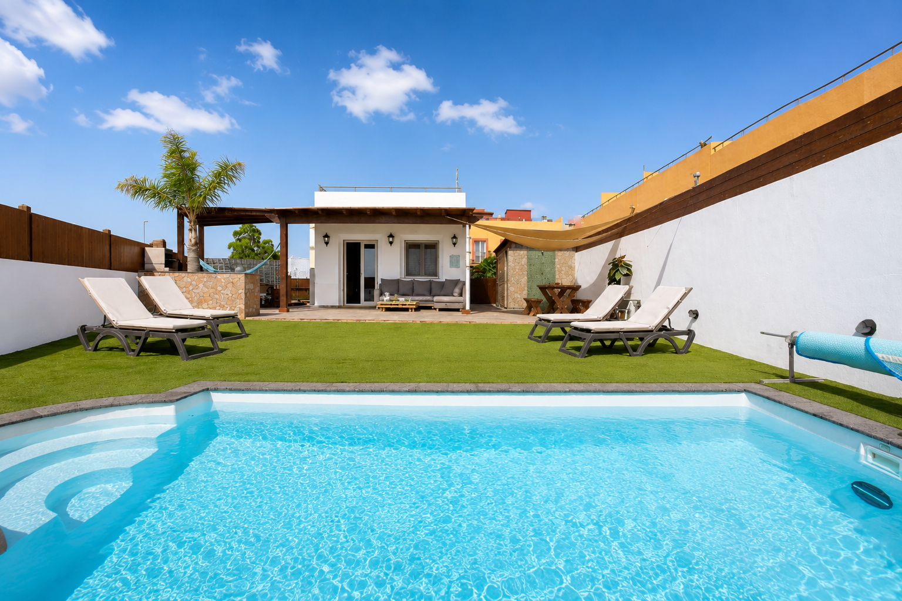

Luxury Villa · Corralejo · Fuerteventura
Villa del Relax es una vivienda vacacional pensada para disfrutar con calma. Espacios amplios, jardín privado, piscina privada climatizada y todo lo necesario para compartir unos días inolvidables en Corralejo, a solo 10 minutos de las Dunas.

Villa del Relax se encuentra en una zona tranquila de Corralejo, Fuerteventura, a pocos minutos de playas, restaurantes, supermercados y del Parque Natural de las Dunas.
Serás redirigido al calendario oficial de reservas gestionado por Holidu.